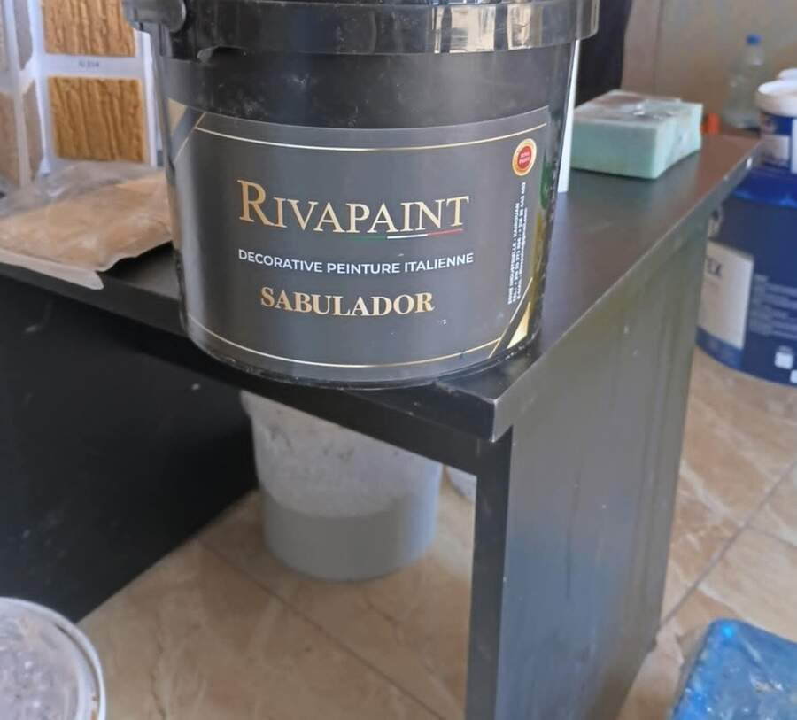
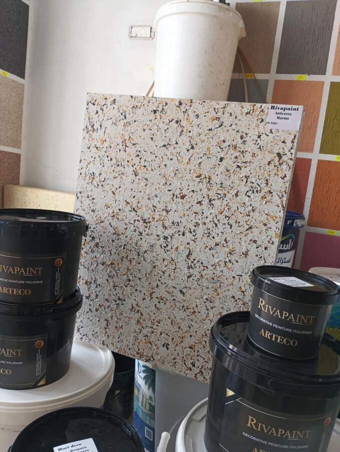
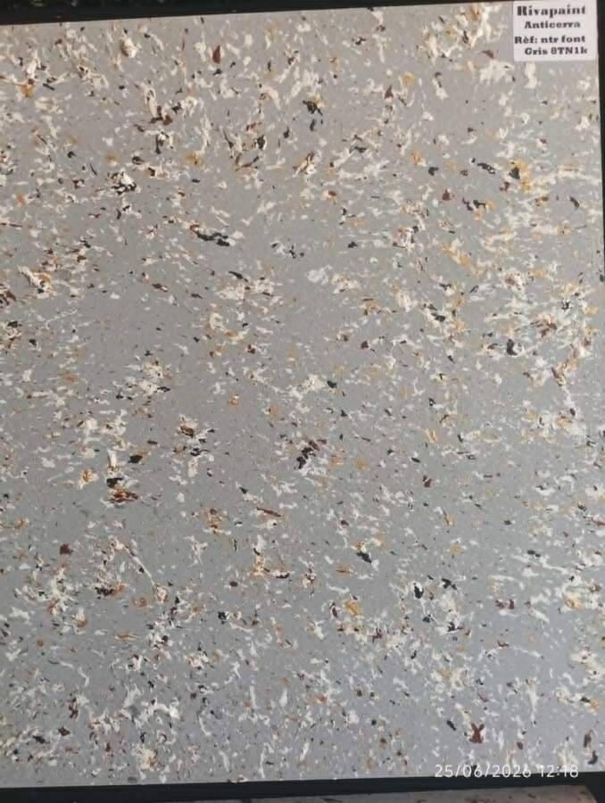
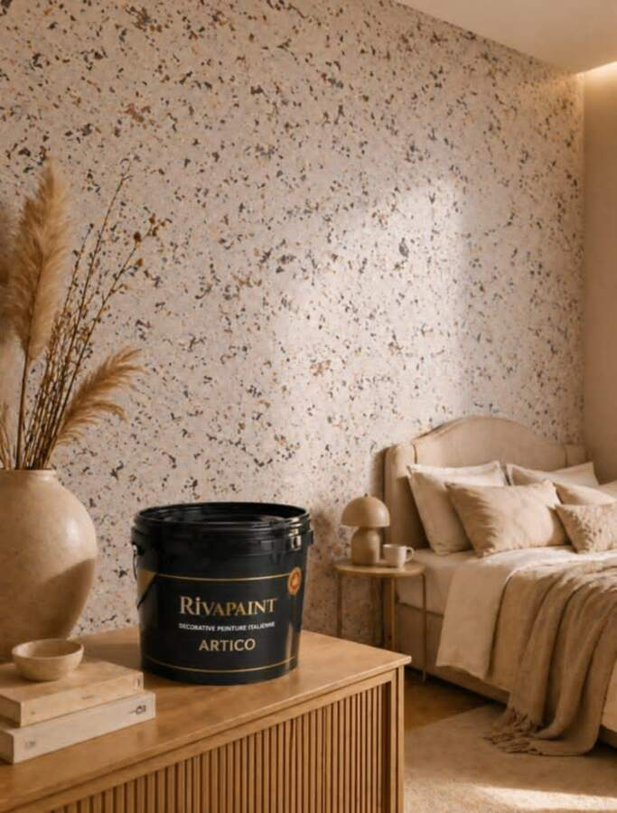

Nos finitions
KhayriPaint propose à Kairouan quatre gammes Rivapaint, chacune déclinée en plusieurs teintes. Un échantillon est toujours réalisé avant application définitive.

Sabulador
Un grain sablé projeté et travaillé à la main, qui donne du relief aux murs tout en restant doux au toucher. Une finition appréciée pour les espaces qui demandent du caractère sans excès de brillance.
- Grain fin — rendu discret, ton beige rosé
- Grain rustique — effet plus marqué, plus brut
Anticerra
Un effet marbre minéral, moucheté d'éclats dorés, bruns et anthracite, qui reproduit la profondeur du marbre naturel — sans son poids, sans les contraintes de pose d'une pierre véritable.



Stuc
Un enduit lissé à la spatule, en plusieurs passes fines. Sa surface légèrement irrégulière capte la lumière et donne aux murs une présence proche de la pierre polie, dans des tons chauds bronze et doré.
- Stuc satiné — rendu mat, texture douce
- Stuc doré — reflets dorés, ambiance chaleureuse
Artico
Un effet granité dense, aux éclats contrastés — blanc, brun, anthracite et touches dorées — pour un rendu proche du terrazzo. Une finition qui apporte du caractère aux grands murs comme aux petits espaces.

Besoin d'aide pour choisir ?
Nous vous proposons un rendez-vous et un échantillon adapté à votre pièce avant tout engagement.